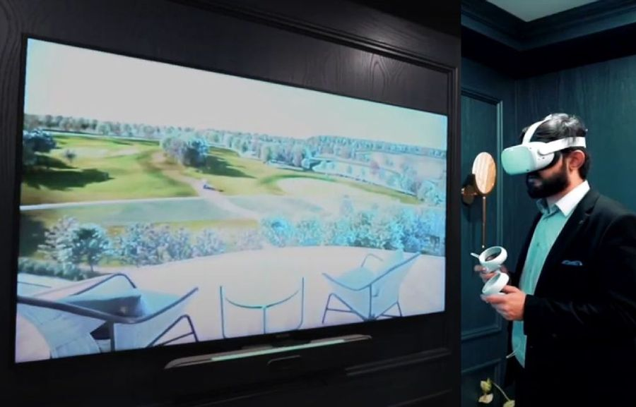

Planning a VR experience for an event or exhibition
How to plan a VR station for an event: headset choice, floor space, throughput, session length, comfort, hygiene, staffing and a checklist for your brief.

A headset on a stand looks like the easiest part of an event. It is not. Virtual reality at a launch, exhibition or property showcase fails in ordinary ways: a queue that never moves, a visitor who feels unwell, a tracking boundary that clips a chair, a headset that dies at the busiest hour. At AKS we build VR experiences alongside projection and AR work, and the planning questions are mostly operational rather than creative. This note walks through the decisions that decide whether a VR station works on the day: hardware type, space, throughput, content length, comfort and safety, staffing, and a checklist to take into your own planning.
Standalone or PC-tethered headsets
The first decision is the hardware family, and it shapes everything else.
- Standalone headsets run the experience on the device itself. There are no cables to a computer, setup is quick, and one person can run several stations. The limit is processing power: scenes must be built for a mobile chipset, with simpler lighting and lower polygon counts.
- PC-tethered headsets are driven by a powerful computer and can show richer, more detailed worlds. The cost is a cable, a machine per station, more power, more setup and more things that can fail.
For most events we lean towards standalone headsets unless the visual quality of the content genuinely requires a tethered setup. Fewer moving parts matter more on show day than a slightly better render. If the experience is an architectural walkthrough or a product demonstration, a well-optimised standalone build is usually enough. If you are unsure, our guide to choosing immersive technology for a live event compares VR with the other formats before you commit.
Space and tracking
Modern headsets track their own position using cameras on the device, so you do not need base stations in the room. That makes setup easier, but it does not remove the need for a clean space. Each station needs a clear area that the user defines as a safe boundary, and the manufacturer's guidance on minimum floor space for room-scale use is the starting point. Beyond that:
- Keep the floor free of cables, steps, loose mats and furniture inside the boundary.
- Avoid mirrors, large glass panels and very dark or very reflective surfaces where possible, since they can confuse camera-based tracking.
- Keep the area well lit. Camera tracking generally struggles in near-dark rooms, and exhibition lighting that is dimmed for mood can cause trouble.
- Separate the VR area from walkways so passers-by do not step into a user's space.
If the experience is seated or uses a single standing spot, the footprint shrinks and the risks fall. Seated experiences are often the better choice for a crowded exhibition floor.
Throughput: how many people can you actually serve
Throughput is the number most clients underestimate. The time per visitor is not just the length of the experience. It includes greeting and explaining, fitting the headset, adjusting it, starting the content, taking the headset off and resetting for the next person. A simple example: a four-minute experience plus about three minutes of fitting and changeover is roughly seven minutes per visitor, or a little over eight people an hour per headset. That is arithmetic, not a guarantee, and your own rehearsal will give a better figure.
Once you have a realistic per-person time, work backwards from the audience you expect.
- Decide the target number of visitors and the hours the station will run.
- Divide by the per-person time to see how many headsets you need.
- Add spare headsets for cleaning, charging and failures.
- Give people something to do while they wait, such as a spectator screen or a printed preview, so a queue feels like part of the experience.
A short experience with a prompt handover almost always beats a longer, richer one when the audience is large. If the event is a public launch with a lot of footfall, design the content for volume. If it is a private showing for a handful of decision makers, you can afford a longer, more detailed session.
Content length and design for first-time users
Many visitors will be putting on a headset for the first time, and the content has to forgive them. We design for this audience in a few consistent ways.
- Keep sessions short. Three to five minutes is a sensible range for an event station. Anything longer should be justified by the audience and the setting.
- Start gently. Open with a calm, stable scene and let the user look around before anything moves. A sudden start in a moving environment is the quickest route to discomfort.
- Prefer simple controls. Gaze or one-button interaction works better than a full controller layout for people who have never used one. Hand tracking removes the controller entirely, though it needs good lighting.
- Show the user what to do. On-screen prompts inside the headset should be short and placed where the eye lands naturally.
- Design a clear end. The user should know when the experience is over, and the content should return to a calm scene before the headset comes off.
The experience also has to hold a steady frame rate. A stable, smooth image is the single most important technical factor for comfort, so we build to the performance budget of the chosen headset and test on that exact hardware, not on a development machine. The discipline is similar to the one in our note on video codecs and frame rates: the playback system has to deliver what the content promises, every time.
Comfort, safety and hygiene
People react differently to virtual reality. Some feel nothing, and some feel uneasy within a minute. Artificial movement, where the camera moves through the scene while the body stays still, is the usual cause. Teleport-style movement, slow and predictable motion, and stable reference points in the scene all help. Always let a visitor stop at any moment, and make that clear before they start.
Practical safety measures for a staffed station:
- Check the manufacturer's age guidance for the headset and follow it. Do not assume a headset is suitable for children.
- Ask visitors to remove loose items and, if they wear glasses, check that the headset fits over them.
- Keep a seat nearby for anyone who needs to sit down after the session.
- Brief staff to watch the user's movement and to step in before a user reaches the edge of the space.
- Have a clear way to end an experience quickly from outside the headset.
Hygiene matters more at a public event than most clients expect. Plan for wipes or cleaning products that the manufacturer says are safe for the lenses and foam, replaceable or disposable face covers, and a clean-and-reset step in the cycle between visitors. Build that time into your throughput estimate rather than hoping it will be quick.
Staffing, spectators and the networked setup
A VR station is not self-service. We plan at least one trained person per small cluster of headsets, with a clear script for greeting, fitting, starting and ending each session. Another person to manage the queue and answer questions helps once the area gets busy.
Spectators matter as well. Casting the headset view to a nearby screen gives the queue something to watch and gives the sponsor visible presence, much as a projected show on a building does for a crowd. Casting usually needs a reliable network or a dedicated device, so test it in the venue. Public venue wifi is often congested or blocked, and we prefer a private router with a known configuration for any station that relies on casting or remote content updates.
Finally, plan for power and charging. Check how long the headset battery lasts under real use, keep a charging rotation and spare units, and know where the power sockets are. As with outdoor shows, the plan should assume that something will fail and have a quick replacement ready, a theme we cover in backup and redundancy for projection mapping shows.
A VR station planning checklist
| Item | What to confirm |
|---|---|
| Hardware type | Standalone or tethered, and why |
| Floor space | Clear boundary per station, away from walkways |
| Lighting | Bright enough for camera tracking |
| Session time | Experience length plus fitting and reset |
| Headset count | Expected audience, plus spares and charging |
| Comfort | Stable frame rate, gentle start, easy exit |
| Hygiene | Cleaning products and face covers approved by the maker |
| Staffing | Trained operator per cluster, plus queue management |
| Network | Private router if casting or live updates are used |
Rehearse the queue, not just the content
Before the event, run a full dry day. Use the real headsets, the real space and a few colleagues who have never seen the experience. Time every step and note where people hesitate. Most problems show up in the first ten minutes: a prompt that is unclear, a boundary that is too tight, a cleaning step that takes longer than planned. Fixing them in rehearsal costs almost nothing, and fixing them in front of a queue costs a great deal.
VR works best when it is one part of a wider experience, alongside a projected show, an AR activation or a physical display. Our team has delivered work across Pakistan, from Parliament House in Islamabad to Mohatta Palace in Karachi, and the same rule applies at every scale: plan for the audience first and the technology second. If you are considering a VR station for a launch, exhibition or property showcase, tell us the venue, the expected audience and the date through the contact section and we will help you size it.
Planning a VR experience?
Tell AKS Creative Studio the venue, expected audience and date, and we will help you size the hardware, space and staffing.
Start a conversation ↗